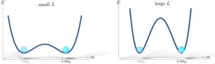

Advanced Quantum Materials 2027 · All lectures · Lecture notes
Session 1. Second Quantization, Mean-Field, and Spontaneous Symmetry Breaking
1.11a Spontaneous symmetry breaking and why a symmetric Hamiltonian can have an asymmetric ground state
Before we discuss interactions, let us ask a more general question, since everything that we do in the rest of the session is an example of it. Physical theories usually have a lot of symmetry. Space is symmetric, time is symmetric, and so on. However, reality is not symmetric, since an object is in one place and not in another, and a system evolves forward in time and usually not backward. So why do the symmetries of the Hamiltonian so often not survive in the ground state?
Let us start with an example from daily life, which is a group of colleagues who sit at a table for a meal, with bread on both sides of each person. Each person has to choose between the bread on the left and the bread on the right. There is of course a “correct” answer from etiquette, but let us say that nobody knows it. Some people will take the left one and others the right one, and once the choice is made, everybody at the table ends up in one of two equally good configurations, which are everybody-left or everybody-right. The initial setup, with bread on both sides, was perfectly symmetric. The final result is not. This difference, a symmetric problem with a solution that is not symmetric, is spontaneous symmetry breaking on a small scale.
The same logic, in an exact form, is what happens in a classical Ising ferromagnet. The set of ground states of the Hamiltonian is symmetric, since all spins up is as good a solution as all spins down. However, if we take a very large system, which formally means an infinitely large one, or the thermodynamic limit, the system has to choose one of the two, all spins up or all spins down. Which one we measure is decided by fluctuations and not by the Hamiltonian, and once it is decided, the state that we observe is no longer symmetric, even though the Hamiltonian that produced it was always symmetric. The requirement of the thermodynamic limit is essential. Strictly speaking, spontaneous symmetry breaking is a statement about infinite systems, and it is a generic feature of many-body interactions and correlations, not something that appears for a few particles. Figure 1.2 puts all of this in one picture. It shows a symmetric energy landscape whose minima are not symmetric, with a barrier between them that becomes impossible to cross only in the thermodynamic limit.

Why is spontaneous symmetry breaking strictly a statement about infinite systems?
Show the answer
The correct option is B.
In a finite system the system can cross the barrier between the two minima, and the true ground state is the symmetric superposition of both. The barrier grows with the system size, and in the thermodynamic limit it cannot be crossed anymore.